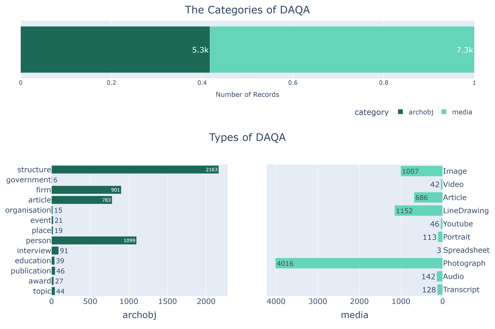
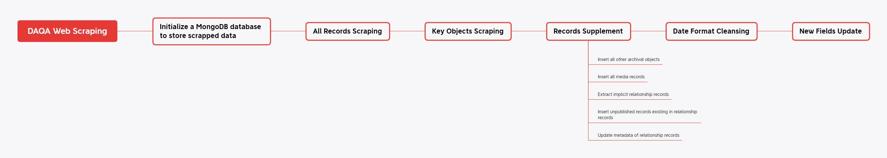
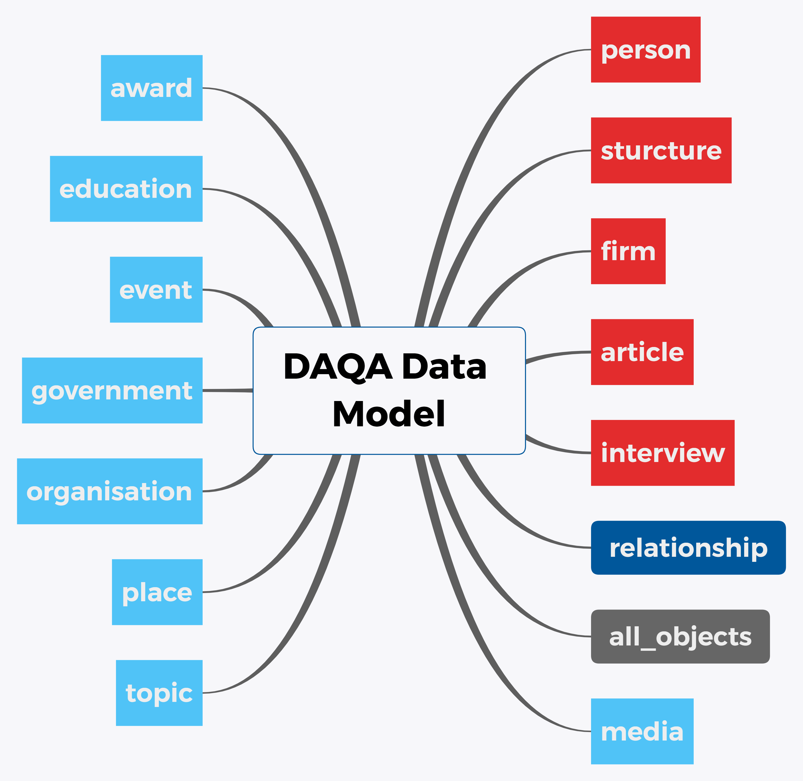
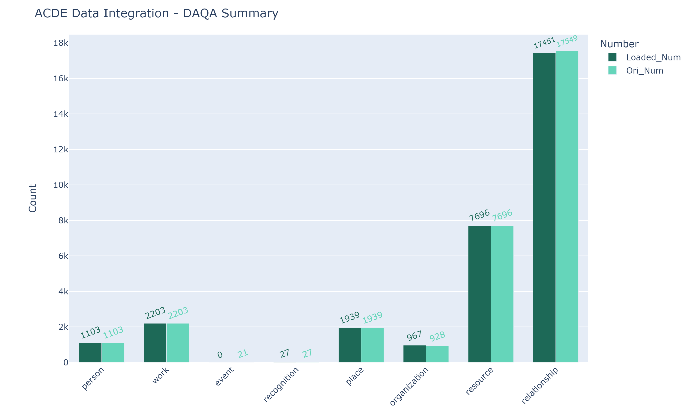

Digital Archive of Queensland Architecture
Contents
Digital Archive of Queensland Architecture¶
Introduction¶
This digital archive of Queensland architecture offers a wealth of information on the region’s design history. The archive was originally constructed as part of the Hot Modernism project and focused on the period 1945-1975. We are now expanding to include earlier and later periods. The database comprises thousands of audiovisual and textual files that allow you to explore relationships between people, projects and firms.
The following sections will describe the data processing procedure that integrates DAQA data into ACDE and the data sumary of DAQA.
Data Processing¶
Data Extraction & Exploration¶
The DAQA data needs to be scraped from its original website, which poses a challenge for developing a data model that can be easily integrated into ACDEA while being as similar as possible to the original DAAO data schema. Efforts will be made to carefully design a data model that can capture all relevant information from the scraped data and effectively integrate it into ACDEA without losing its original structure and meaning.
Upon exploring the Browsing tab on the original DAQA website, it was discovered that there are at least five key entities existing in DAQA: “ARCHITECT”, “FIRM”, “PROJECT”, “ARTICLE”, and “INTERVIEW”.
After parsing the DAQA website, several implicit APIs were found to be useful in web scraping.
https://qldarch.net/ws/search?q={query_terms}&pc={page_count}&p={page_no}: Whenquery_termsis*, the general records under all the document ids existing in DAQA can be retrieved.https://qldarch.net/ws/{query_category}/{doc_id}: This API can be used to retrieve the detailed record under the specific document id within the specific query category. The value ofquery_categorycan bemediaorarchobj.https://qldarch.net/ws/media/download/{doc_id}: This API can be used to retrieve the resource under the specific document id within themediacategory.https://qldarch.net/ws/{query_type}: This API can be used to retrieve all detailed records under the specific query type, where thequery_typevalues are the names listed in the Browsing tab on the original website.
By analyzing the all the general records using https://qldarch.net/ws/search?q=*, the DAQA records are classified into 2 categories: “media” and “archobj”. In the media category, there are 10 types of records including Photograph, LineDrawing, Image, Article, Audio, Transcript, Portrait, Youtube, Video, Spredsheet, while there are 13 types of records including structure, person, firm,article,interview, publication, topic, education, award, event, place, organisation, government in archobj category. The hierachy of DAQA records are illustrated as following:
The following charts, which was generated by the jupyter notebook DAQA_HierachySummary.ipynb, illustrates the hierachy of the hierachy of DAQA records.

To facilitate loading DAQA data into ACDE, a scraping pipeline has been established. The process involves the following steps:

Setting up a MongoDB database called
daqa_scraped.All Records Scraping: Scraping all general records by calling the API
https://qldarch.net/ws/search?q=*, and storing them in theall_objectscollection.Key Objects Scraping: Scraping all detailed records, including their relationship records, for the five key objects explicitly listed on the original website. These records are stored in their respective collections in the database. Specially, the geographical coordinates of
projectrecords are reverse-geocoded to obtain standardized geographic information for the project.Records Supplement: Supplementing records of all other objects not listed on the original website and extracting implicit records from the scraped data.
Inserting all other archival objects that are not listed on the original website, but exist in the
all_objectscollection, into their respective collections in the database.Inserting all the media records into the
mediacollection.Converting some fields of the records into corresponding relationship records and inserting them into the
relationshipcollection.Adding unpublished records that couldn’t be found in the
all_objectscollection but exist in relationship records.Adding a tracking attribute called
ori_dbidinto the subject and object of relationship records in therelationshipcollection.
Date Format Cleansing: Cleansing date formats and converting all date attributes into a standard JSON format consisting of fields for year, month, and day.
New Fields Update: Updating new fields supplemented by experts at the University of Queensland.
Finally, the conceptual data model of scrapped DAQA data is shown as follows:

The schema of DAQA is shown as follows:

This pipeline ensures that all relevant records are scraped and loaded into the database in an organized and structured manner, ready for integration into ACDE. For more details of web scraping of DAQA, please check jupyter notebook DAQA_Scraping.ipynb.
Data Transformation & Loading¶
As many preparations have been made in the scraping process, the transformation and loading of DAQA data are more straightforward by mapping corresponding entities/attributes to the levels/attributes in ACDEA. The related records of the corresponding original records are aggregated from the relationship level and updated into the related attribute of the original records.
On entity level, the DAQA entity projection is listed as follows:
DAQA Entity (Collection) |
ACDEA Level |
|---|---|
person |
person |
structure |
work |
event |
event |
award |
recognition |
place, structure |
place |
government, organisation, firm |
organization |
publication, article, interview, media |
resource |
relationship |
relationship |
On attribute level, please find the details in the notes of DAQA data dictionary. The data dictionary can be downloaded below.
For more details of data transforming and loading of DAQA, please check jupyter notebook DAQA_Loading.ipynb.
Integration Data Report¶
The following chart, which was generated by the jupyter notebook DAQA_IntegrationSummary.ipynb, illustrates the number of DAQA records before and after integration.
